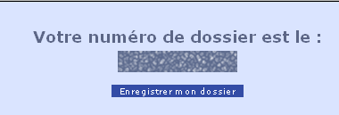
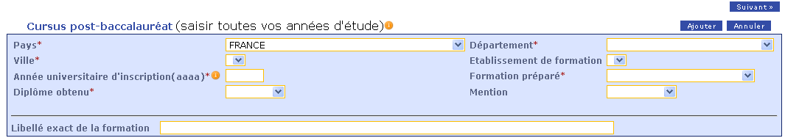
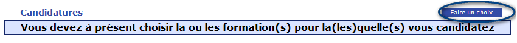
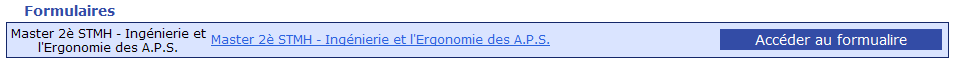
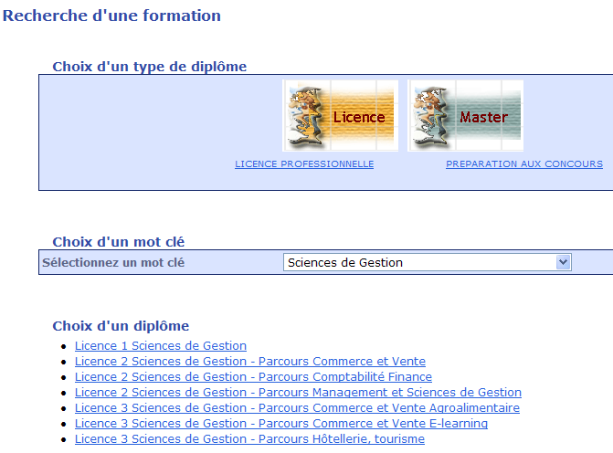

- vous êtes étudiant à l'université Rennes 1 cette année, cliquez-ici ;
- vous êtes un ancien étudiant de l'université Rennes 1, cliquez-ici ;
- vous n'avez jamais étudié à l'université Rennes 1, cliquez-ici.
-
Qu'est-ce que l'INE? Comment le trouver?
Si vous avez été candidat à un baccalauréat français depuis 1995 ou
avez été inscrit dans l'enseignement supérieur français depuis cette date, vous
possédez un INE (Identifiant National Etudiant) ou l'équivalent un numéro BEA (numéro
de base élèves académiques).
Vous trouverez ce numéro :
- Soit en haut à gauche dans l'entête du relevé de notes du baccalauréat ;
- Soit sur tout relevé de notes universitaire.
Soyez vigilants lors de la saisie : l'INE est constitué de 10 caractàres alphanumériques et
d'une clé.
Les candidats étrangers n'ayant jamais été inscrits dans un établissement français
n'ont pas d'INE.
Retour aux questions
Retour aux questions
Retour aux questions
Retour aux questions
-
Je
n'ai pas de numéro de dossier
Pour
obtenir votre numéro de dossier, vous devez saisir vos
coordonnées (état civil et contact), votre
baccalauréat et votre cursus post bac. Un numéro de
dossier vous est alors indiqué, vous devez cliquer sur le bouton
« Enregistrer mon dossier », sinon votre saisie
est perdue.

Un
mail récapitulatif vous est envoyé au moment de
l'enregistrement de votre dossier.
Retour aux questions
-
Supprimer ces lignes
vides grâce à la croix rouge sur la ligne ;
-
Vérifier que
toutes vos années d'études apparaissent bien et
compléter le cas échéant. Pour cela, vous devez
utiliser le bloc en haut de page :

N'oubliez
pas d'ajouter votre année en cliquant sur le bouton .
Retour aux questions
Retour aux questions
-
J'ai saisi mon numéro INE mais j'ai
le message « Ce numéro NNE ne correspond
à aucun étudiant ou ancien étudiant de Rennes
1 ».
La
saisie du numéro INE n'est utile que pour les étudiants de
l'Université Rennes 1 (UR1) ou les étudiants ayant
fait au moins une année d'étude à l'UR1. En
saisissant le code INE, toutes les informations saisies lors de
l'inscription à l'Université Rennes 1 apparaissent
dans Candidatures. Les
étudiants en cours de scolarité à l'UR1 ont
accès à Candidatures dans l'ENT.
Retour aux questions
Retour aux questions
Retour aux questions
Retour aux questions
-
J'ai
imprimé mon dossier et il y a une erreur, que faire ?
Vous
pouvez vous reconnecter et corriger l'erreur. Ensuite en cliquant sur le
bouton vous téléchargerez
à nouveau votre dossier avec la correction. Vous pouvez
renouveler ces opérations autant de fois que nécessaire.
Quand
le dossier est prêt, vous devez l'envoyer à l'adresse
indiquée dans le dossier avec les pièces justificatives
listées dans le dossier.
Retour aux questions
-
Je souhaite candidater à deux
formations, comment faire ?
Avec
un même numéro de dossier vous pouvez candidater à
plusieurs formations.
Dans
l'écran « Récapitulatif de votre
dossier », vous pouvez candidater plusieurs fois à une
formation :

Vous
pouvez réitérer ce choix plusieurs fois.
Attention,
certaines formations nécessitent de remplir des formulaires
spécifiques. Après avoir choisi votre formation,
vérifiez en bas de l'écran
« Récapitulatif de votre dossier » s'il n'y
a pas une section « Formulaires » :

Retour aux questions
-
Comment vais-je suivre l'avancement de
traitement de mon dossier?
Après avoir choisi une ou plusieurs formation, vous allez suivre en ligne le traitement de votre
dossier après son envoi par courrier postal.
Sur chaque ligne formation, vous allez suivre :
- la réception du dossier : Arrivé ou arrivé et incomplet
- le résultat de votre candidature
- si vous avez confirmé ou si vous vous êtes désisté.
Retour aux questions
-
Comment trouver la ou les formations auxquelles je
souhaite poser ma candidature ?
Après
avoir saisi les écrans « Etat civil et
contact », « Baccalauréat ou
équivalence » et « Cursus
post-baccalauréat », vous arrivez sur l'écran
« Récapitulatif de votre dossier ». Vous
devez :
-
Cliquer sur
« Faire un choix » :
-
Vous devez choisir
ensuite le type de diplôme en CLIQUANT sur les images
« LICENCE » ou « MASTER »
ou en cliquant sur « Licence professionnelle »
ou « Préparation aux concours » ;
-
Enfin, il vous
faudra choisir un mot clé pour afficher la liste des
formations :

Si
vous n'avez pas trouvé votre formation, vous pouvez choisir un
autre mot clé dans la liste déroulante ou cliquer sur un
autre type de diplôme.
Retour aux questions